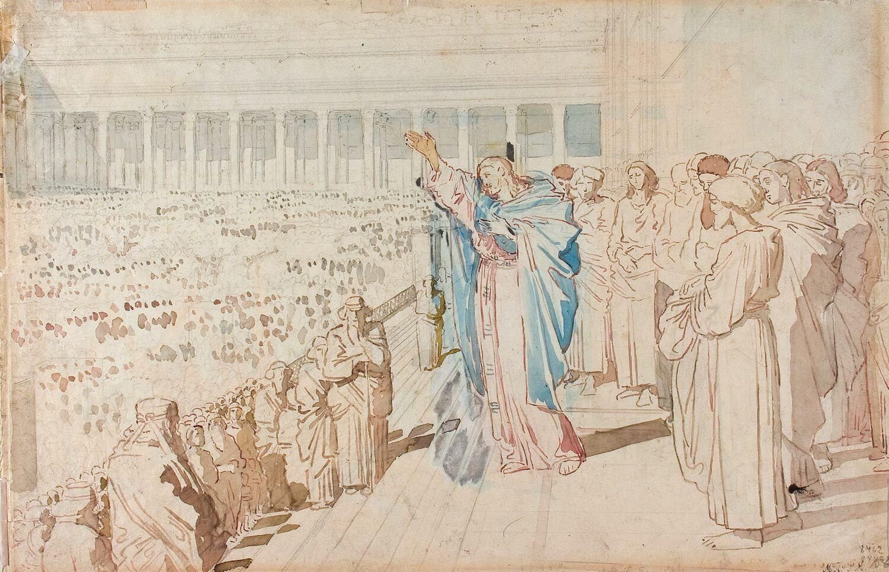
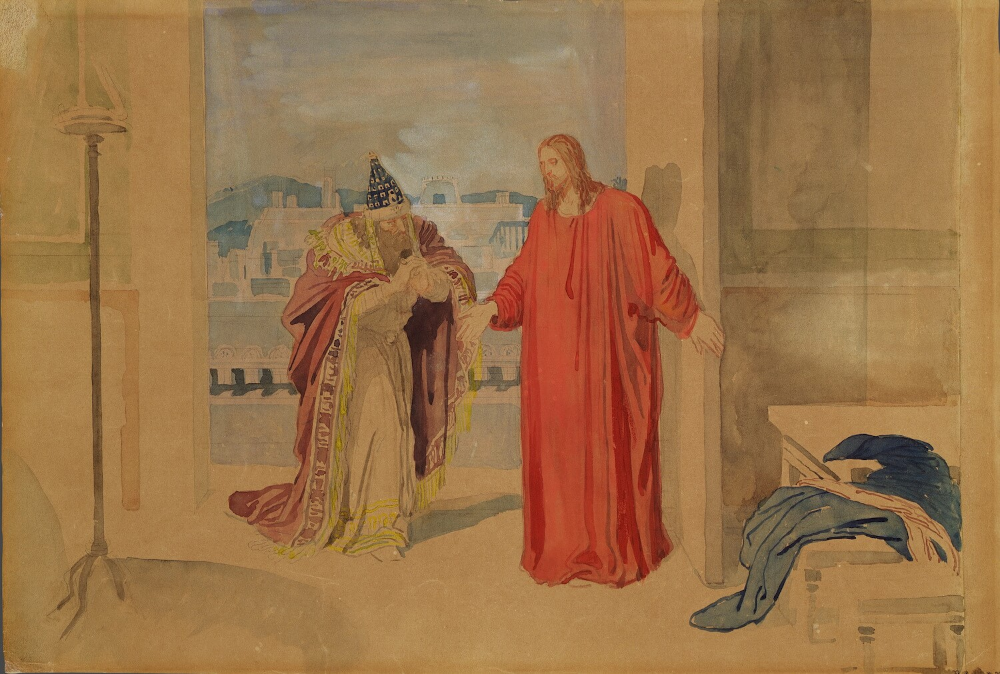
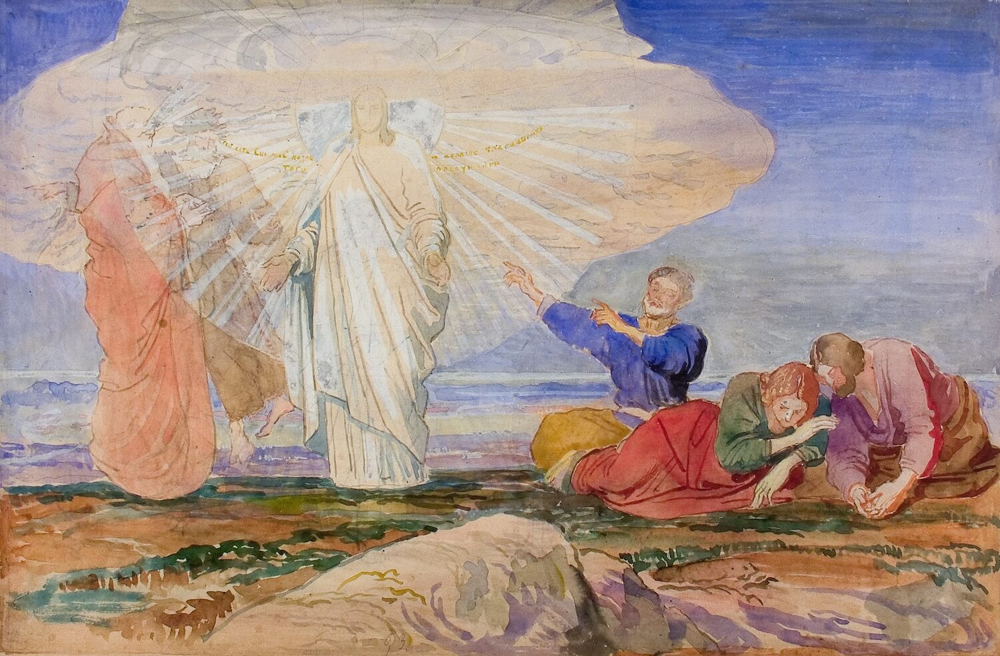

А.А. Иванов. Христос проповедует на портике храма («Иерусалим, Иерусалим, избивающий пророков и камнями побивающий посланных к тебе!»). Конец 1840-х – 1858. ГТГ
⠀
Третьяковская галерея – эксклюзивный обладатель графического наследия Александра Андреевича Иванова (1806–1858), включающего в себя более 700 самостоятельных листов и около 40 альбомов. Полнота собрания позволяет сформировать несколько сменяющих друг друга экспозиций, каждая из которых имеет характер мини-выставки. «Чудеса и проповеди Христа» – выставка, продолжающая показ графического цикла «Библейские эскизы», работе над которым художник отдал последнее десятилетие своей жизни – с конца 1840-х до начала 1858 года.
⠀
⠀
Фотогалерея

А.А. Иванов. Хождение по водам. (Христос спасает начавшего тонуть Петра).
Конец 1840-х - 1858 ©Государственная Третьяковская галерея.

А.А. Иванов. Христос и Никодим. Конец 1840-х - 1858
©Государственная Третьяковская галерея.

А.А. Иванов. Преображение. Конец 1840-х - 1858
©Государственная Третьяковская галерея.
⠀
О мероприятии
⠀
По замыслу Иванова, эскизы предназначались для будущего воплощения их в настенных росписях «в особо на то посвященном здании, разумеется, не в церкви». Евангельская тема – «жизнь и деяния Христа» – должна была предстать в окружении изображений ветхозаветных, исторических и мифологических сцен, а также библейских текстов. Композиции росписей складывались в сложную систему параллелей, взаимосвязей и сопоставлений.
⠀
В «Библейских эскизах» выразились сложные художественно-философские поиски Иванова, связанные с важнейшими для него вопросами – о миссии художника, о роли искусства и его воздействии на нравственное и духовное преобразование мира.
⠀
Задуманный художественный ансамбль «Храм искусства», или «Храм философии», можно отнести к романтическим утопиям. Работа Иванова не была завершена. В какой-то мере эта незавершенность выявляет грандиозность замысла, его уникальность как в истолковании библейских текстов, так и в стилистике акварельных композиций.
⠀
Выставка «Чудеса и проповеди Христа» посвящена периоду жизни Иисуса, который называют временем его общественного служения. Экспозиция включает работы на темы крещения, призвания учеников, чудес, в том числе знаменитый шедевр художника – эскиз «Хождение по водам (Христос спасает начавшего тонуть Петра)». Значительное место принадлежит акварельным листам со сценами бесед, пророчеств, проповедей, среди них «Христос и самарянка», «Христос и Никодим», «Проповедь Христа в храме». Им свойственны композиционная изобретательность, смелые пространственные и световые эффекты в изображении интерьеров с величественными колоннадами, лестницами. Особая эмоциональность отличает эскизы, на которых Христос предстает перед народом на портике храма, на улицах и площадях, заполненных толпой, выступающей постоянным свидетелем и участником происходящего. Завершенность акварелей, их количество говорят об особом интересе автора к этой теме. Она отвечала размышлениям Иванова о пророческой роли художн...
⠀
Материалы к выставке
Скачать Буклет
⠀
О музее
⠀
Ответы на частые вопросы
История
Проекты
Попечительский совет
Фонд поддержки
Контакты
Карта cайта
Студии и творческие мастерские
Выставки
⠀
Текущие выставки
Будущие выставки
Внешние выставки
Постоянные экспозиции
⠀
Наука в музее
Научные отделы
Посетителям
⠀
Здания и часы работы
Билеты, льготы и бесплатные дни
Экскурсии
Контакты и отзывы
Доступный музей
⠀
Билеты
Купить билет
Возвраты
⠀
2024 © Государственная Третьяковская галере
Разработка сайта - Infospice